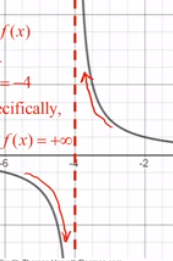
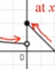
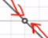
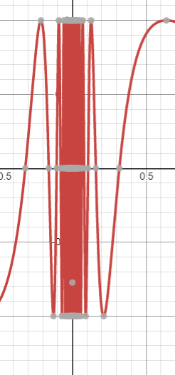

Vertical Asymptote:
Usually occurs when the denominator approaches zero, gets smaller and smaller

Jump Discontinuity:

Removable Discontinuity ("hole"):
Usually evaluates to indeterminate form

Oscillating Discontinuity
Left/right and double-sided limits do not exist
"bounces" between two values, usually indefinitely
Most common example:

When given a table of points, never fill in the gaps between the points unless you are given additional information